Today
Prepare is the main action. Log visit is an outlined button in the separate Notes, audio & outcome section.
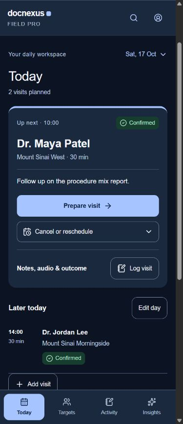
HCP & meeting prep
Edit time, Full profile, Visit history and Add material are visible. Capture follows the preparation content.
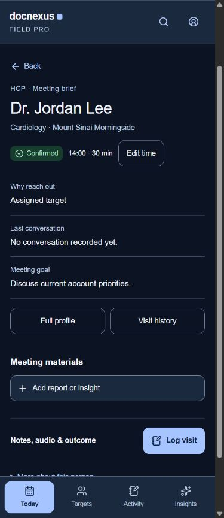
Appointment
Meeting type belongs to the appointment. The form ends with request or save actions; personal time holds remain distinct.
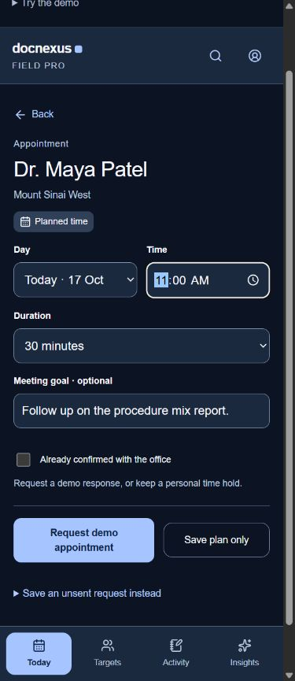
Log visit
Notes and recording are optional. Save visit as introduces the explicit outcome buttons.
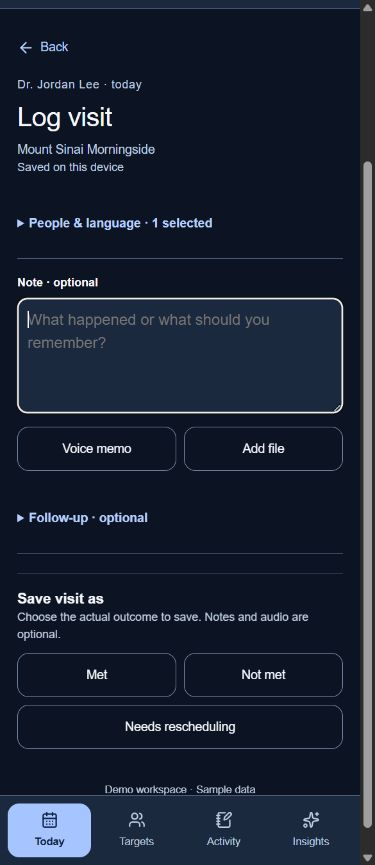
Activity
A compact To do queue supports completion and Undo. Dated visit rows show discussion previews, outcomes and recordings. Wide layout · Light appearance


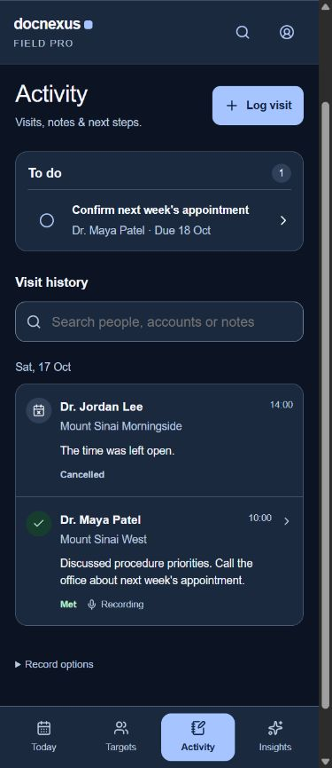
Visit record
Review the summary and actions first. Source audio and transcript editing remain available.
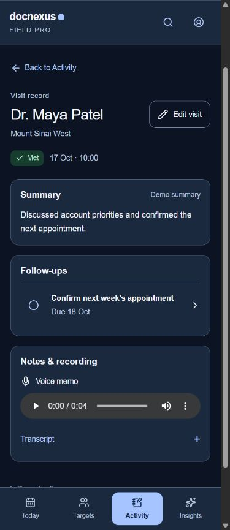
Replace from Targets
Cancellation opens the existing Targets screen. The freed slot, shared search, distance and List/Map controls stay together.
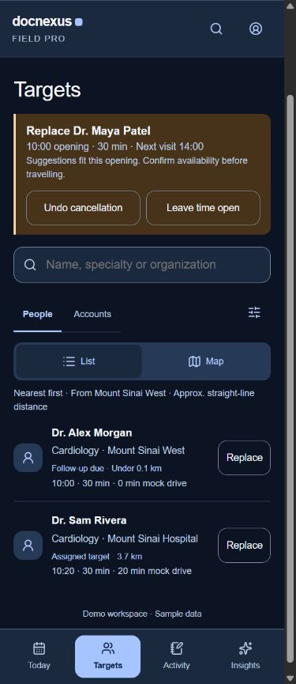
Insights
The three common destinations are clear button rows. Specialist tools have a labelled expandable control.
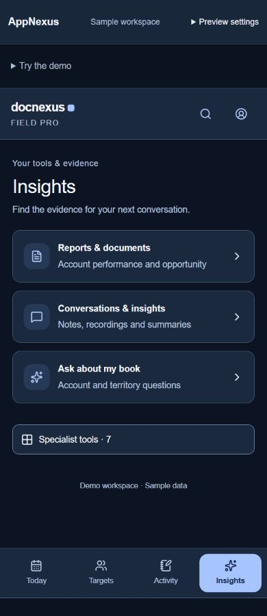
Targets & map
The same search, distance and filters apply in List and Map, including when choosing a replacement.
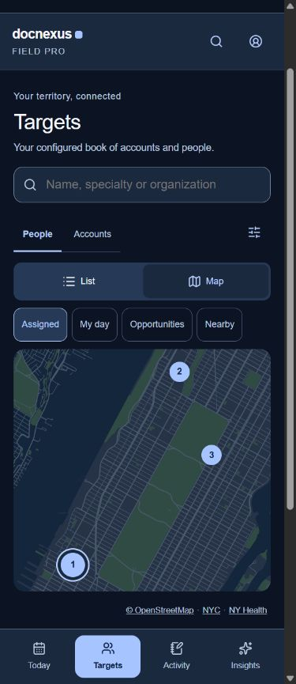
Cancel or reschedule
Two explicit choices beside the visit: Doctor cancelled opens Targets; Reschedule opens the appointment editor.
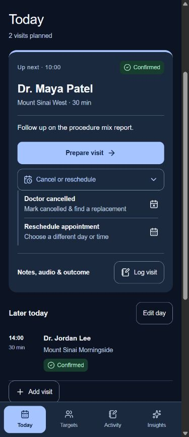
Replacement planned
The chosen person and arrival time appear in Today as a planned time. The 14:00 appointment stays fixed.
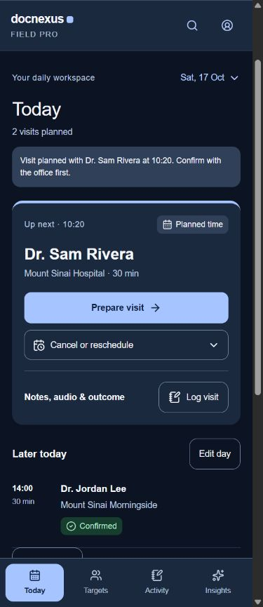
Shared target filters
Suggested or distance ordering, a selected origin and radius work in both List and Map, for normal discovery and replacements.
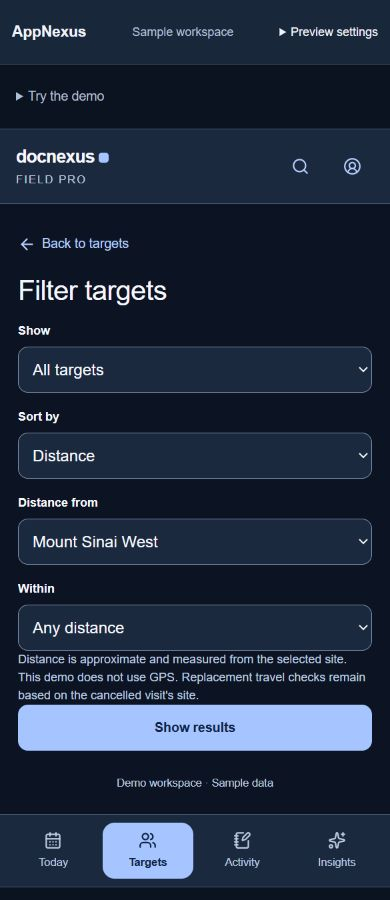